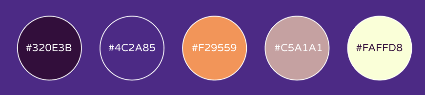
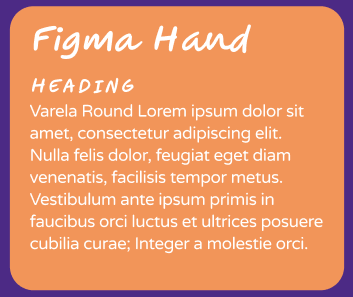
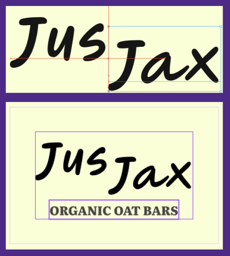
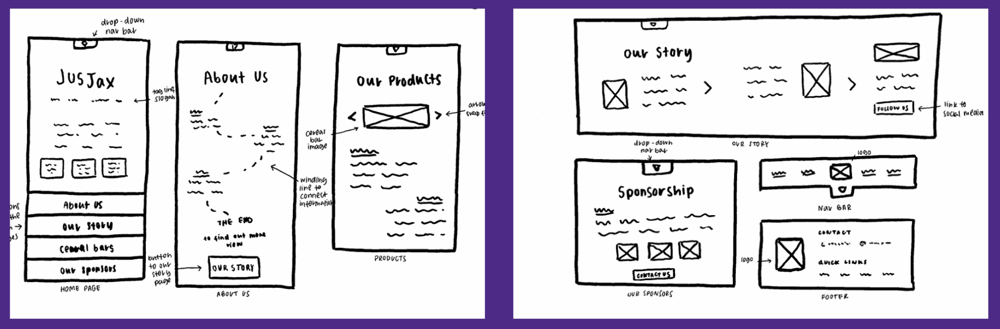

JusJax, we're not hippies we just love good taste
This project includes a brand identity and website concept for JusJax, a fictional organic oat bar company aiming to convert a younger audience
into becoming more health and climate conscious. The project focused on creating a compelling brand image and narrative that helped inform the final prototype design.
Role: UX/UI Designer, UX Writing
Tools: Figma
Problem
JusJax are trying to enter a crowded market with customers aiming for convenience. Their target market is young health conscious
individuals therefore, they needed a brand identity that was fun and engaging but also showed the love and care that underline
their values. The brand and designs must balance a farm-to-table production line, an energetic youthful lifestyle image and premium
pricing.
Target Audience
The brand is targeting young, environmentally conscious individuals which helped to inform the target audience of 20-30 year-olds
looking to lead healthy, active lives. These individuals will take particular care at knowing each ingredient and where it came from,
highlighting the importance of pointing users towards the brand story on the website.
Brand Identity
1. Colour Palette
The colour scheme combines colourful, eclectic colours with neutrals including an oat shade to tie together both the brand products and farming process

2. Typography
The design contains a combination of sans-serif fonts - using Figma hand for a handwritten, organic feel in conjunction with Varela Round to create a soft clean look

3. Logo
The brand logo is simplistic and uses the brand name in a clear but relaxed font that encompasses the brand identity. They are a clean company that values high quality but they are also down to earth.

4. Brand Narrative
Core Principles: We want to create an optimistic and refreshing brand with our dream to become the first option for a feel good snack without any additives or hidden ingredients.
We want to empower the younger generation to become more climate and health conscious.
Brand Personality: Our goal is to inspire and create a new wave of healthy eaters who pay attention to the ingredients list and care about what they are putting into their bodies
Tone: We want our users to have a positive experience after looking at our content this is why we have taken consideration into using different tones for each scenario.
The tone should change with each relevant task/page.
5. Brand Voice
Overall the voice aims to be helpful, motivating and full of life, similar to
that of a fitness instructor. For each descriptor (motivating, light-hearted, friendly)
there is an accompanied description and an example do and don't to eleviate confusion
6. Text Style Guide
The style guide lays out rules for punctuation, use of contraction and formatting recommendations. Use of text decorations is discouraged and all sentences must end with a punctuation mark
Wireframes
Low-fidelity wireframes allowed the website to be mapped out fully and allow for prioritisation of content.

Redesign
To try and set JusJax apart I had initially designed a more unorthodox homepage using a ‘Hub and Spoke’ design. This was approved with further testing but ultimately resulted in confusion leading to a
redesign that focused on colour and clarity rather than a uniqueness.